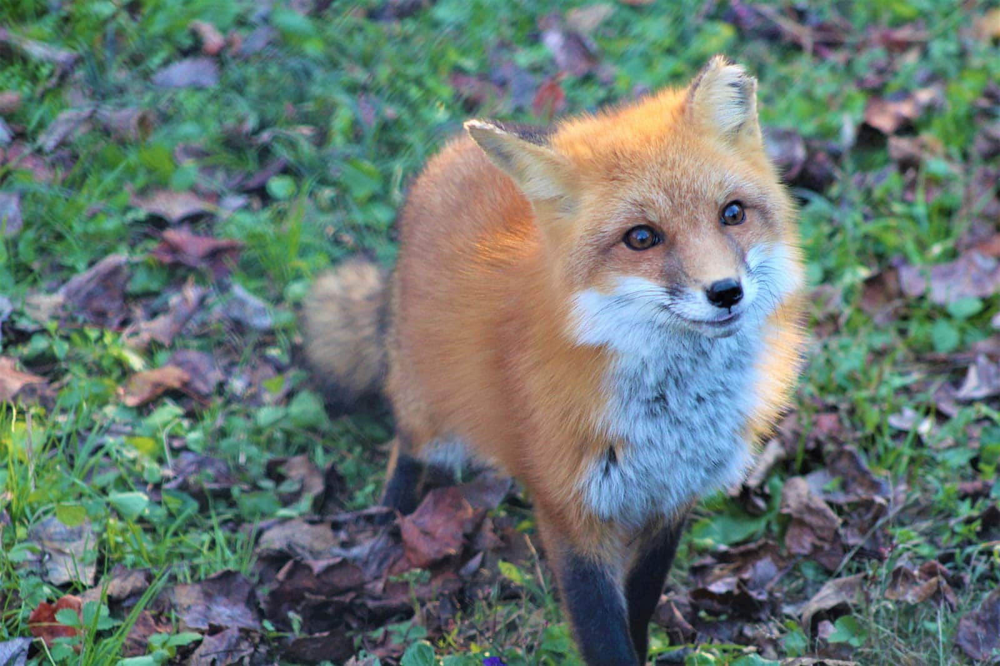

Hi! My name is Misael Tavarez, and I am 19 years old. I am from Providence,
Rhode Island but my parents are from the Dominican Republic. I have three sisters and I am the eldest child of my family.
I went to Village Green Virtual for high school and was a part of the media club there.
I am studying Cyber Security and Networking for the three-year program. The reason I came to NEIT was because of my love for technology.
When I was in high school I learned about NEIT thanks to the ACN network allowing me to take college courses during my high school year.
I like reading, mainly mystery or fantasy books, coding, writing, playing video game, and watching anime. My favorite TV show is Kamen Rider Ryuki though I don't watch movies a lot my favorite is The Nightmare before Christmas.

My favorite animal is the red fox. Click on the image to go learn about them!!